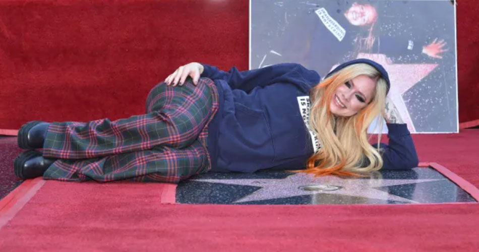

Avril Lavigne inaugura estrela na Calçada da Fama em Hollywood
Após 20 anos de carreira, Avril Lavigne foi homenageada e ganhou uma estrela na Calçada da Fama em Hollywood, nessa quarta-feira (31).
A cerimônia foi transmitida ao vivo nas plataformas digitais da instituição e contou com a presença de amigos da cantora, tornando Avril a artista de número 2.731 a receber a honraria.
Na inauguração a cantora utilizou o mesmo moletom de quando visitou a Calçada da Fama pela primeira vez, aos 16 anos de idade.
A artista se apresenta no Brasil na próxima quarta-feira (7), em São Paulo e parte para seu show no Palco Sunset do Rock in Rio no dia 9 de setembro.

Avril Lavigne no Rock In Rio 2022
Antes de cantar no Rock in Rio, Avril vai fazer um show em São Paulo da turnê Love Sux no dia 7 de setembro, no Espaço das Américas, casa que passa a se chamar Espaço Unimed.
A apresentação no festival carioca acontece no dia 9 de setembro.
Os ingressos variam de R$ 150,50 (referente a meia-entrada de Mezanino) até R$ 731 (pista premium), e podem ser comprados pelo site oficial.
Anel de noivado de Avril Lavigne custa cerca de R$ 1,5 milhão: confira
Avril Lavigne está noiva de Mod Sun! O roqueiro pediu a cantora em casamento e deu um lindo anel de diamantes, que custa cerca de R$ 1,5 milhão. O pedido de casamento aconteceu às margens do Rio Sena, em Paris, na França.
Com todo o clichê permitido, Sun ficou de joelhos e colou a joia no dedo da amada, que desejava ter um anel de diamantes em formato de coração, e teve seu desejo atendido. Aliás, no anel está escrito “Oi ícone”, em inglês, frase que Mod disse quando a encontrou pela primeira vez para a gravação de Flame, em 2021.